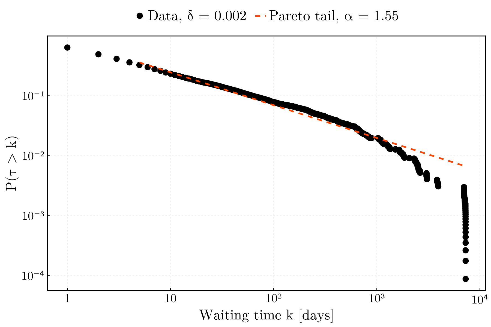

Downstream example
The shortest path from a collection on disk to a model fit with Distributions.jl. Nothing here is specific to any analysis; it shows the three things a consumer touches: the distribution table, the WaitingTimeDistribution, and its DiscreteNonParametric view.
The example runs on the EUR-USD fixture shipped with the tests, so it executes in seconds during the documentation build.
using WaitingTimes
using WaitingTimes.Storage: load_distributions
using Distributions
using CairoMakieA collection on disk
Normally produced by scripts/run_pipeline.jl; here in a temporary directory.
handle = run_pipeline(joinpath(pkgdir(WaitingTimes), "configs", "quickstart.toml");
output_dir = mktempdir())
table = load_distributions(handle.dir)
first(table, 4)| Row | delta | tau | count | pmf | cdf | ccdf |
|---|---|---|---|---|---|---|
| String | Int64 | Int64 | Float64 | Float64 | Float64 | |
| 1 | 0.0005 | 1 | 5359 | 0.4691 | 0.4691 | 0.5309 |
| 2 | 0.0005 | 2 | 1499 | 0.131215 | 0.600315 | 0.399685 |
| 3 | 0.0005 | 3 | 771 | 0.0674895 | 0.667805 | 0.332195 |
| 4 | 0.0005 | 4 | 498 | 0.0435924 | 0.711397 | 0.288603 |
One distribution, in memory
The same object the pipeline wrote, recomputed directly from the series.
series, _ = prepare(load_settings(joinpath(pkgdir(WaitingTimes), "configs", "quickstart.toml")))
δ = threshold(0.002, series)
d = empirical_distribution(waiting_times(series, δ), δ, series)WaitingTimeDistribution(δ = 0.0020, 11372 waits over 741 distinct times [sample], mode = :elapsed, censored = 199/11571)Through the Distributions.jl extension it becomes a DiscreteNonParametric, with the usual methods.
dn = WaitingTimes.discrete_distribution(d)
(mean = mean(dn), median = quantile(dn, 0.5), p_tau_gt_10 = ccdf(dn, 10))(mean = 80.98039043264157, median = 2, p_tau_gt_10 = 0.23311642631023566)A Pareto tail by maximum likelihood
Expand the counts into a sample, keep the tail above $x_{\min}$, and let Distributions.jl estimate the shape. The distance between the fitted and the empirical cumulative distributions over the tail is one line.
sample = [k for (k, c) in zip(WaitingTimes.support(d), WaitingTimes.counts(d)) for _ in 1:c]
x_min = 5
tail = sample[sample .>= x_min]
pareto = fit_mle(Pareto, tail)Distributions.Pareto{Float64}(α=0.5479566265003212, θ=5.0)tail_dn = WaitingTimes.discrete_distribution(empirical_distribution(
[τ >= x_min ? τ : 0 for τ in waiting_times(series, δ)], δ, series))
distance = maximum(abs(cdf(pareto, k) - cdf(tail_dn, k)) for k in support(tail_dn))
(alpha = shape(pareto) + 1, x_min = scale(pareto), D_KS = distance)(alpha = 1.547956626500321, x_min = 5.0, D_KS = 0.09526135808500244)Figure
Survival function of the data with the fitted tail, drawn with the package theme (WaitingTimes.figure_theme) and decade ticks (WaitingTimes.decade_ticks): data as markers, fit as a dashed line from $x_{\min}$, legend on top with the fitted exponent as an entry.
k = WaitingTimes.support(d)
S = WaitingTimes.survival(d)
keep = S .> 0
kt = k[k .>= x_min]
fig = with_theme(WaitingTimes.figure_theme()) do
fig = Figure(; size = (900, 600))
ax = Axis(fig[1, 1]; xscale = log10, yscale = log10,
xticks = WaitingTimes.decade_ticks(0, 4), yticks = WaitingTimes.decade_ticks(-4, 0),
xlabel = "Waiting time k [days]", ylabel = "P(τ > k)")
scatter!(ax, k[keep], S[keep]; color = :black, strokecolor = :black,
label = "Data, δ = 0.002")
lines!(ax, kt, ccdf(dn, x_min - 1) .* ccdf.(pareto, kt); color = :orangered,
linestyle = :dash, label = "Pareto tail, α = $(round(shape(pareto) + 1; digits = 2))")
Legend(fig[0, 1], ax)
fig
end
fig
This page was generated using Literate.jl.